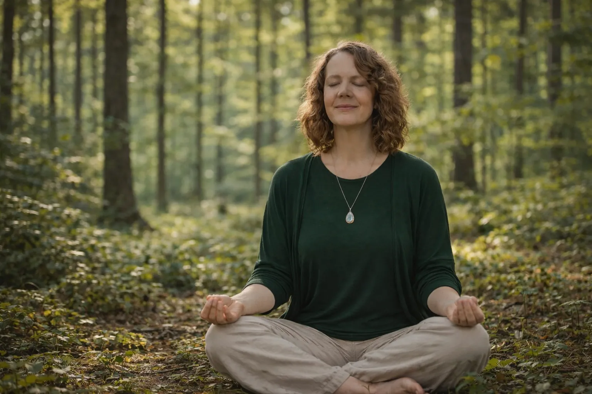

29. September 2026
Die Kraft des einzigen Angebots
Warum ein Webradio in einer Welt des Überangebots guttut.
Weiterlesen →
29. September 2026
Seelenweg oder Resonanzweg?
Warum ich zum ersten Mal in meinem Leben einem Weg folge, der leicht geht, obwohl alle Zahlen dagegen sprechen.
Weiterlesen →